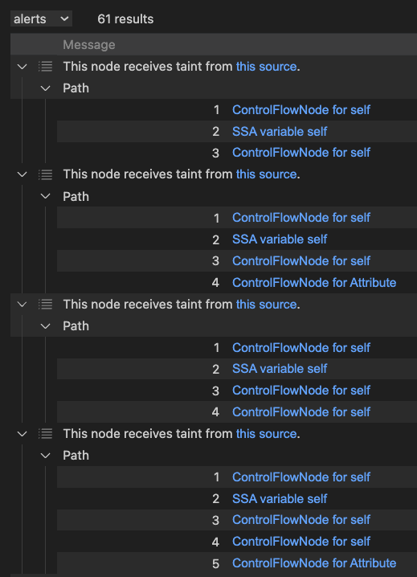

Partial Flow in CodeQL With ConfigSig
ℹ️ Edited 2024-01-11 to add a note about
FlowExplorationbeing deprecated in favour ofFlowExplorationFwdandFlowExplorationRev, and to link to the CodeQL docs on partial flow
CodeQL is an ever-evolving static code analysis engine, which powers GitHub’s SAST.
It’s powerful, but it’s not perfect, and sometimes you need to debug queries to understand why they’re not behaving as you’d expect.
One great tool for that is “partial paths”, which lets you see the dataflow or taint steps that a query is flowing over, so you can see where the flow might have broken between a source and a sink.
💡 to understand source/sink/dataflow/taint terminology, head over to the GitHub blog
Partial paths are used by modifying an existing CodeQL query to alter a normal path query to a partial path query.
This previous guide on partial paths is helpful for understanding the concept, but because the implementation of dataflow and taint in CodeQL has changed, the syntax they suggest no longer applies.
Path queries in CodeQL in Python
Before we get started on partial paths, let’s take a look at how path queries work in CodeQL, in Python.
The docs for dataflow in Python with CodeQL show that we now have to implement a ConfigSig module, vs overriding a DataFlow::Configuration or TaintTracking::Configuration class, which have been deprecated.
Let’s start with an example, the SQL injection query for Python:
/**
* @name SQL query built from user-controlled sources
* @description Building a SQL query from user-controlled sources is vulnerable to insertion of
* malicious SQL code by the user.
* @kind path-problem
* @problem.severity error
* @security-severity 8.8
* @precision high
* @id py/sql-injection
* @tags security
* external/cwe/cwe-089
*/
import python
import semmle.python.security.dataflow.SqlInjectionQuery
import SqlInjectionFlow::PathGraph
from SqlInjectionFlow::PathNode source, SqlInjectionFlow::PathNode sink
where SqlInjectionFlow::flowPath(source, sink)
select sink.getNode(), source, sink, "This SQL query depends on a $@.", source.getNode(),
"user-provided value"
This doesn’t look an awful lot different to previous queries, but notice that the SqlInjectionFlow::PathGraph module is imported, and the SqlInjectionFlow::flowPath predicate is used, whereas in the past those would be directly referenced from the DataFlow or TaintTracking modules.
We have a from clause that defines the source and sink, and a where clause that defines the flow path between them, and finally a select clause that defines what we want to see in the results.
Let’s dig into the implementation of the imported SqlInjectionQuery library. Slightly abbreviated, that looks like:
private import python
import semmle.python.dataflow.new.DataFlow
import semmle.python.dataflow.new.TaintTracking
import SqlInjectionCustomizations::SqlInjection
private module SqlInjectionConfig implements DataFlow::ConfigSig {
predicate isSource(DataFlow::Node source) { source instanceof Source }
predicate isSink(DataFlow::Node sink) { sink instanceof Sink }
predicate isBarrier(DataFlow::Node node) { node instanceof Sanitizer }
}
module SqlInjectionFlow = TaintTracking::Global<SqlInjectionConfig>;
You might be asking “where are the sources and sinks defined?”, and the answer is the SqlInjectionCustomizations module. I’m not going to dive into that - it’s some CodeQL predicates that aren’t necessary to understand partial paths.
The exports from that library are SqlInjectionFlow, which we can see being used in the query above, and the SqlInjectionCustomizations module, which is where the sources and sinks are defined, as well as (for convenience) the generic DataFlow and TaintTracking modules.
Partial paths in CodeQL in Python
Now we’re ready to look at partial paths. Let’s take the same query as above, and modify it to use partial paths:
/**
* @kind path-problem
*/
import python
import semmle.python.security.dataflow.SqlInjectionQuery
int explorationLimit() { result = 20 } // [1]
module FlowsPartial = SqlInjectionFlow::FlowExplorationFwd<explorationLimit/0>; // [2]
import FlowsPartial::PartialPathGraph // [3]
from FlowsPartial::PartialPathNode source, FlowsPartial::PartialPathNode sink // [4]
where FlowsPartial::partialFlow(source, sink, _) // [5]
select sink.getNode(), source, sink, "This node receives taint from $@.", source.getNode(),
"this source"
We needed to make several changes on the lines marked 1-5:
- Add an
explorationLimitpredicate, to limit the length of paths we explore. - Create a
FlowsPartial(the name is my choice) specialising theFlowExplorationFwdmodule inSqlInjectionFlowwith ourexplorationLimitpredicate (the/0means it takes no arguments). - Import the
PartialPathGraphmodule from theFlowsPartialmodule we created in step 2, instead ofPathGraphfromSqlInjectionFlow. - Import the
PartialPathNodetype fromFlowsPartial. - Use the
partialFlowpredicate fromFlowsPartial.
This completely ignores the sink definition in the config.
That query is enough to get us forward partial flow paths. If you run it, you get one result for each flow step along the path, like this:

We can also get reverse partial flow paths, by using FlowExplorationRev instead of FlowExplorationFwd; that takes us from the sink to the source, and ignores the source definition in the config.
ℹ️ Note that the first implementation of this used
FlowExploration, which is now deprecated in favour ofFlowExplorationFwdandFlowExplorationRev. The previous deprecated implementation usedpartialFlowandpartialFlowRevpredicates, which is now replaced by always usingpartialFlow.
Conclusion
Partial paths are a great way to debug CodeQL dataflow and taint queries, and they’re not too hard to implement, once you know how.